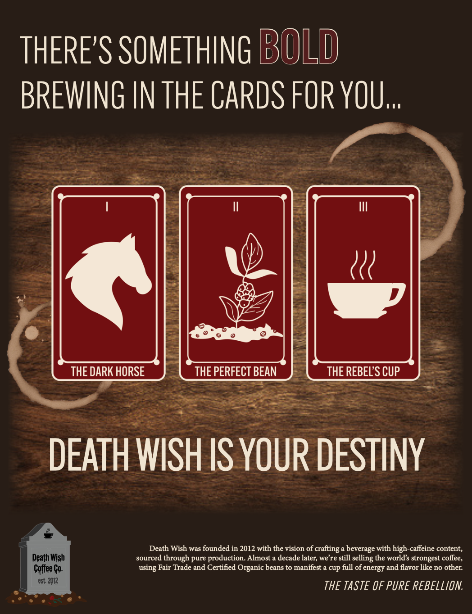
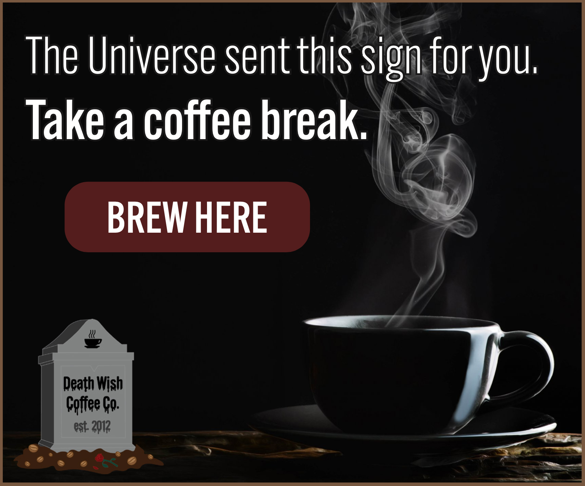
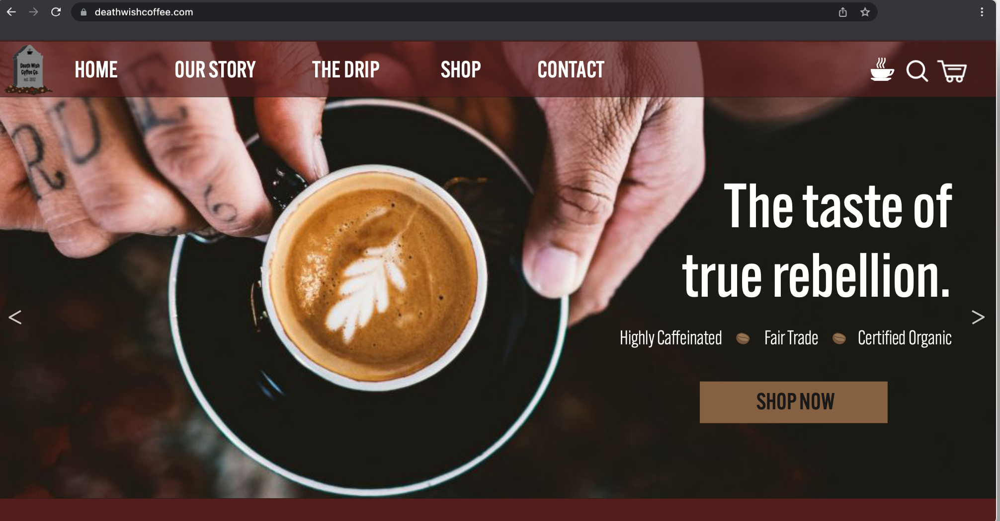
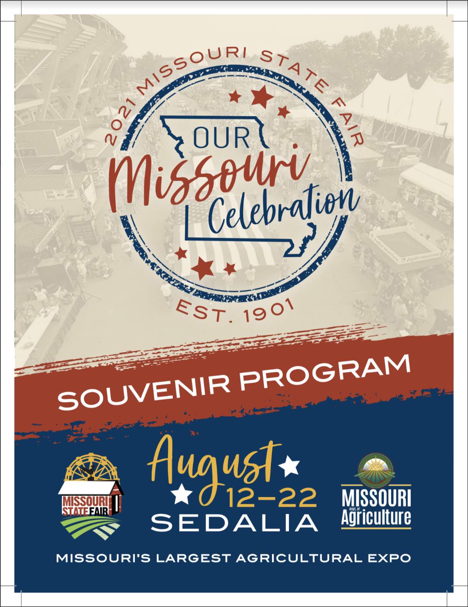
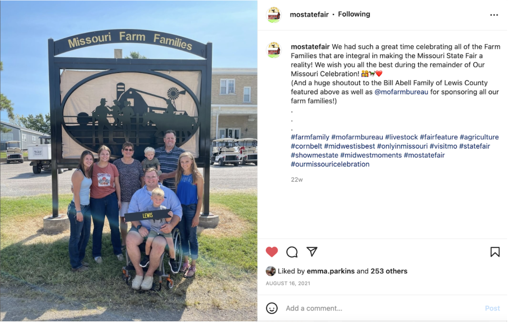
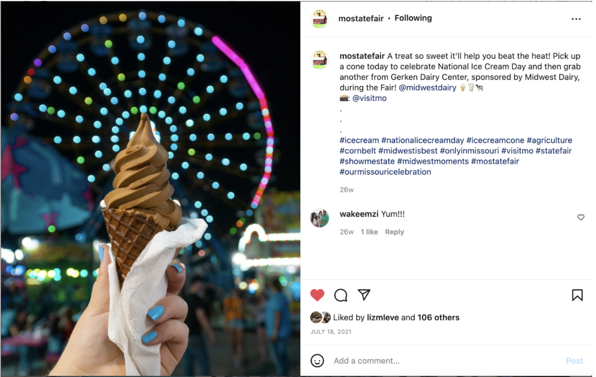
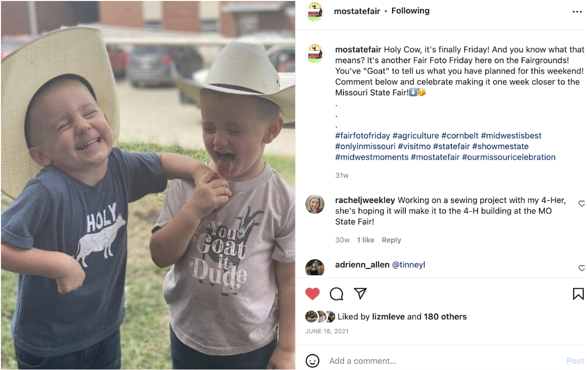

My Previous Projects and Assignments
Marketing
Mock Campaign: Death Wish Coffee Company
Featured below is a series of campaign items produced by my team and myself as a part of an 8-week course dedicated to introduce strategic writing and design concepts. Our proposed client was Death Wish Coffee Co., based out of Saratoga, N.Y.
Brand standards including logo design, color palette and typography created and selected by me.

Print Ad

Banner Ad

Website Homepage
Souvenir Program: Missouri State Fair
This is one of the primary projects worked on in the Missouri State Fair Marketing Department during Summer 2021: a souvenir program displaying several pages of details anyone would want to know about what to do at the Fair.

Out of the total 48 pages, I worked on material on 29 of the pages — with the exception of the front cover and daily schedules crafted by our ad agency. All pages featuring advertisements were inputted by the souvenir program printer, The Sedalia Democrat.
Social Media
Here is a variety of screenshots from the Missouri State Fair's social media feeds demonstrating content creation, photography work and analytics through comments and likes.


